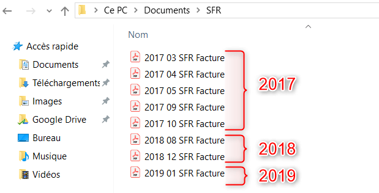

La DRIEAT est l'acronyme pour Direction Régionale et Interdépartementale de l'Environnement, de l'Aménagement et du Logement. Il s'agit d'une structure administrative française qui est chargée de mettre en œuvre les politiques publiques liées à l'environnement, à l'aménagement du territoire et au logement au niveau régional et interdépartemental. La DRIEAT est rattachée au ministère de la Transition écologique et solidaire, et elle exerce ses missions à l'échelle des régions et des départements. Elle est présente dans chaque région française et est composée de plusieurs services et directions spécialisées.
Du 09/05/2023 AU 28/06/2023
Pendant mon stage, j'ai été chargé d'organiser et de simplifier quotidiennement les dossiers au sein du réseau de l'entreprise. Cela impliquait principalement de travailler avec les dossiers de la bibliothèque Windows, qui contenaient un assortiment crucial de documents tels que des factures, des contrats avec des partenaires commerciaux, et des débriefs de réunion. Mon objectif principal était de rationaliser le processus de gestion de ces documents afin d'améliorer l'efficacité et l'accessibilité des informations pour l'ensemble de l'entreprise.
Grâce à mon travail de réorganisation et de simplification des dossiers, j'ai apporté plusieurs avantages significatifs à l'entreprise. Tout d'abord, en classant de manière cohérente et logique les factures, les contrats et les débriefs de réunion, j'ai permis à l'équipe de gagner un temps précieux lors de la recherche d'informations essentielles. Cette meilleure organisation a également contribué à réduire les risques d'erreurs et d'omissions, ce qui a eu un impact positif sur la productivité globale de l'entreprise. De plus, en facilitant l'accès aux informations pertinentes, j'ai contribué à renforcer la communication interne et externe de l'entreprise. Les collaborateurs ont pu trouver plus rapidement les documents dont ils avaient besoin, ce qui a favorisé une collaboration plus fluide entre les différents services. De même, nos partenaires commerciaux ont bénéficié d'une meilleure gestion des contrats, ce qui a renforcé leur confiance dans notre entreprise et amélioré nos relations avec eux. En résumé, ma mission de stage a permis d'optimiser les processus de gestion documentaire de l'entreprise, ce qui s'est traduit par des gains de temps, une meilleure communication interne et externe, et une amélioration des relations avec les partenaires commerciaux.
: 